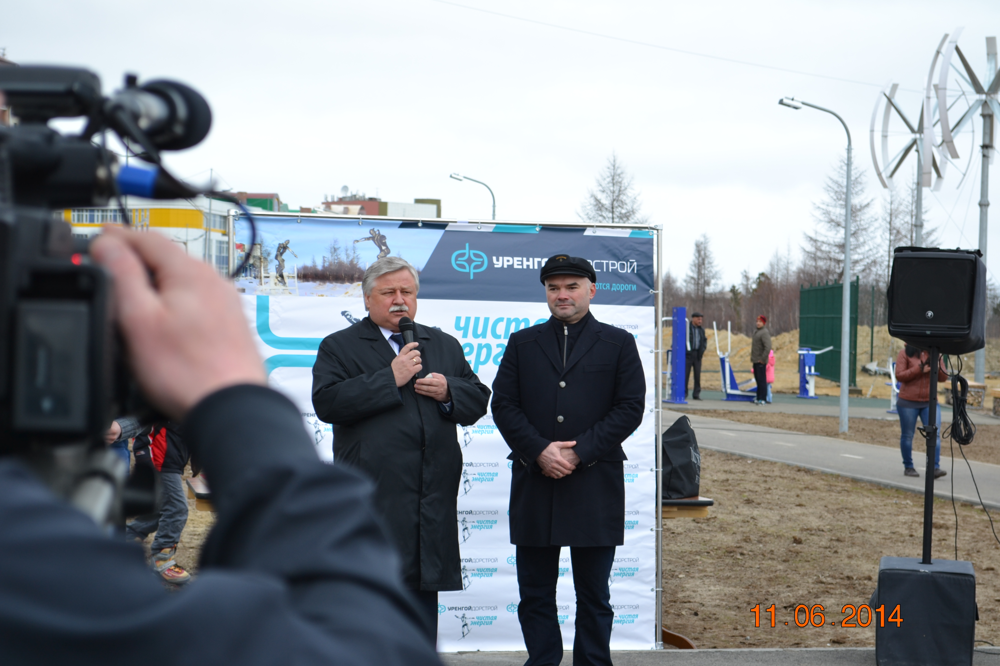

Дата открытия: 11 июня 2014 года.
Сквер «Чистая энергия» в Новом Уренгое открылся в июне 2014 года. Это подарок городу от компании «Уренгойдорстрой». Первый проект, который от начала и до конца выполнило уренгойское предприятие.

«Чистая энергия» — это не просто название проекта, здесь реализована задумка энергосбережения во всём. В сквере установлены ветряные электростанции, благодаря которым работает освещение зоны отдыха.

Основная идея проекта – создать не просто уютное место для пеших прогулок, но и обустроить в 13*этом уголке города площадки для людей, которые предпочитают активный отдых. Сквер оборудовали специальными элементами, которые позволяют любителям роликов, велосипедов и скейтов отрабатывать технику катания, прыжки в высоту и через препятствия, скольжение по рампе и другие уличные трюки.
Также в сквере установлены уличные тренажеры, которые позволяют выполнять упражнения на различные группы мышц. Самых маленьких новоуренгойцев порадуют элементы детских игровых площадок. Архитектурным украшением сквера стали бронзовые фигуры, символизирующие движение, энергию, жизнь.


В день открытия сквера глава администрации города, Иван Костогриз, поблагодарил генерального директора ООО «Уренгойдорстрой» Александра Рыскова за вклад в благоустройство Нового Уренгоя и социально ориентированную позицию компании. «Ценность этого проекта заключаются в том, – отметил Иван Костогриз, – что наряду с красивыми зданиями и сооружениями в городе создаётся комфортная среда для летнего отдыха, прогулок на свежем воздухе, активных занятий спортом. И новоуренгойцы, и администрация, и руководители предприятий понимают, что необходимо не только создавать красоту и комфорт возле своего дома, но и заниматься ландшафтным дизайном в целом».

И.И. Костогриз. Справа: генеральный директор ООО «Уренгойдорстрой» А. А. Рысков
На память об открытии сквера главе администрации города подарили фонарь с энергосберегающей лампочкой, как символ «чистой энергии», а после – высадили деревья.

В 2017 году у сквера появилась входная группа. Проект выбирали на конкурсной основе. Участвовали художники и скульпторы из разных городов. Сегодня зона отдыха в сквере пользуется огромной популярностью среди горожан и гостей газовой столицы.